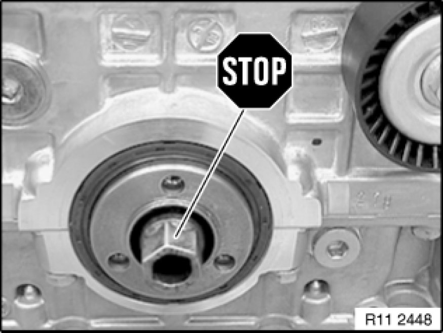
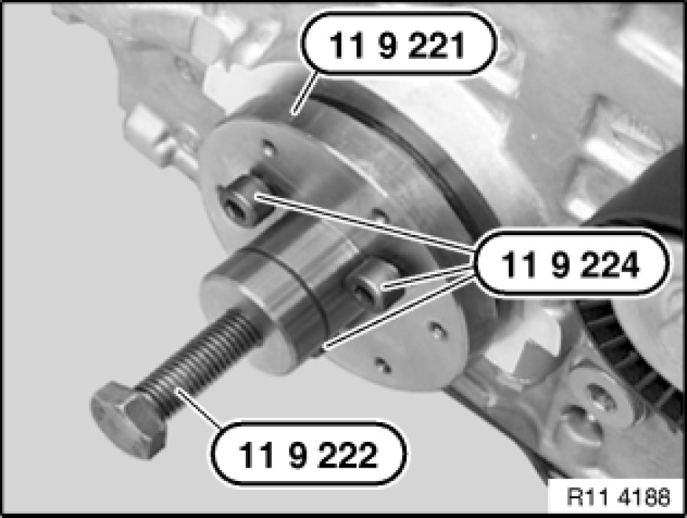
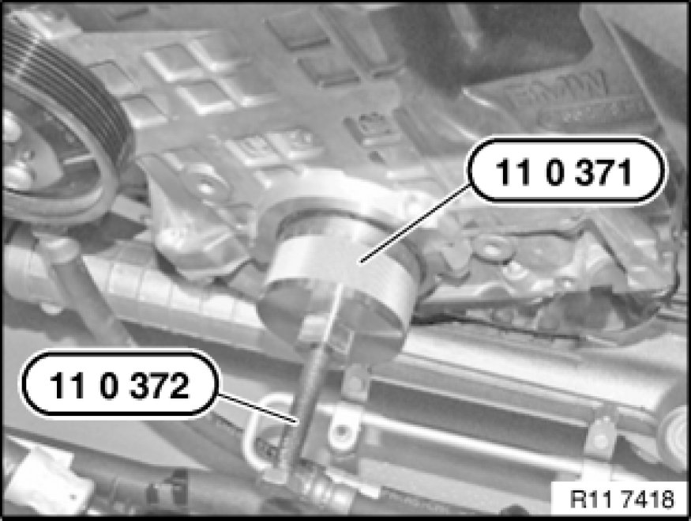
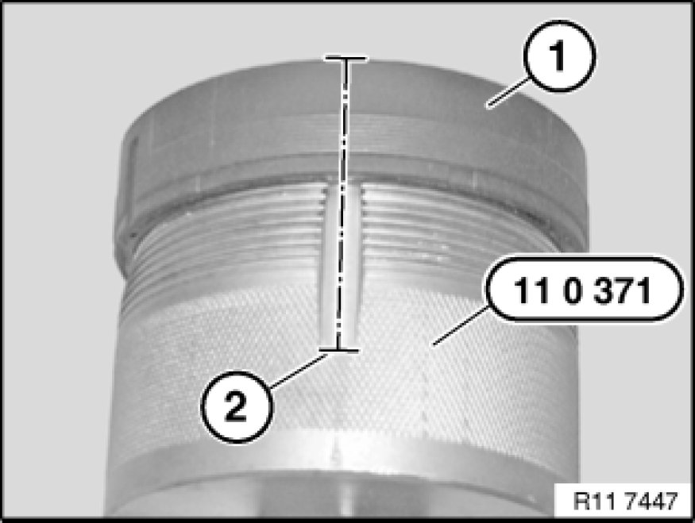
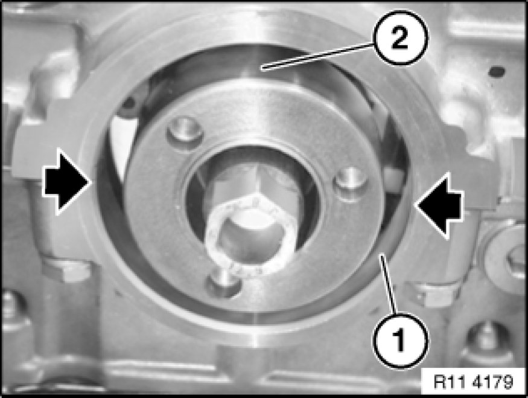
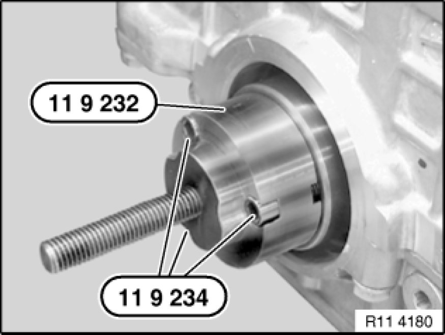
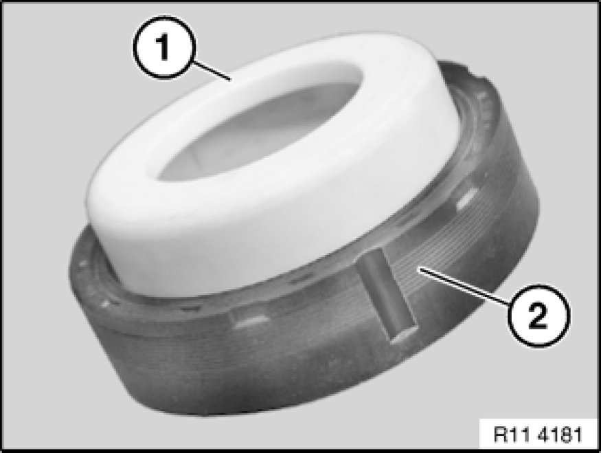
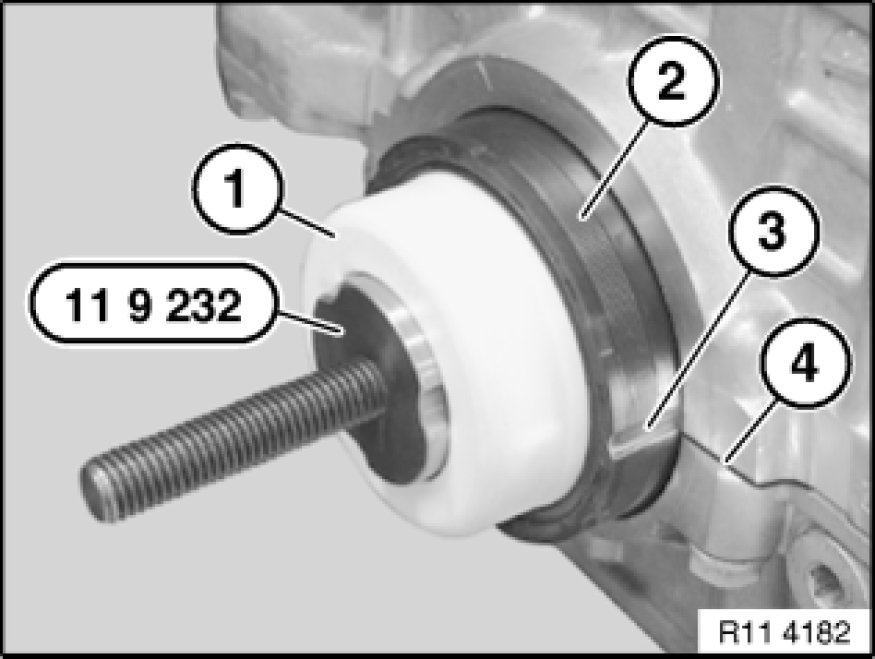
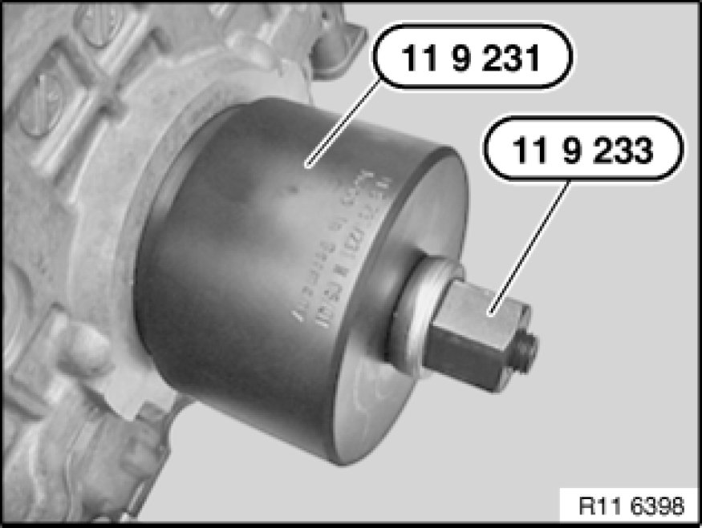
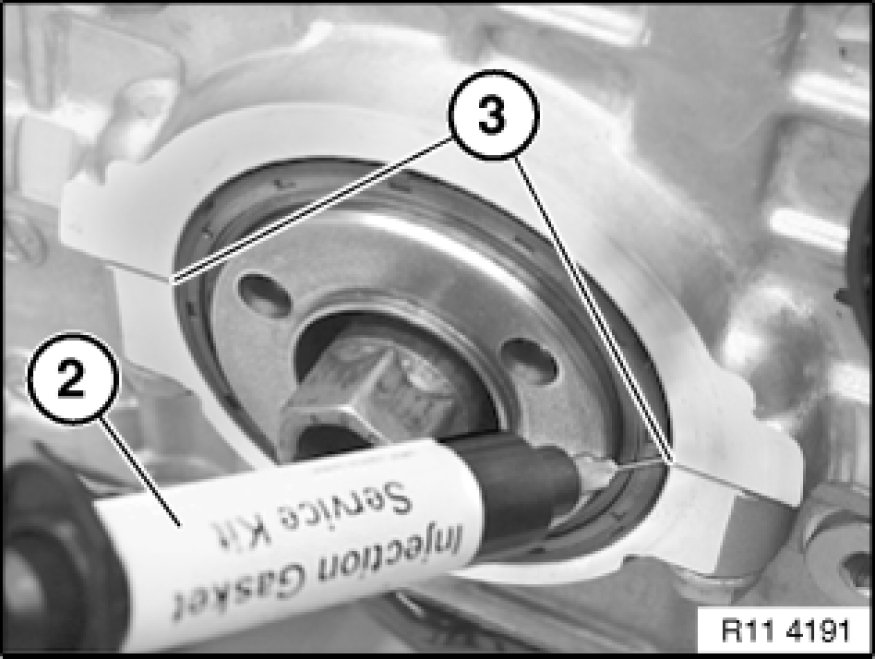

Front Crankshaft Seal: Service and Repair
11 14 005 - Replacing front crankshaft seal (N52K)

Special tools required:

Necessary preliminary tasks:
- Remove vibration damper Service and Repair

Important!
Do not release central bolt.
If the central bolt is released, the sprocket wheels of the timing chain and the oil pump will no longer be non-positively connected to the crankshaft. Inlet and exhaust camshafts can turn in relation to crankshaft.
Risk of damage!

Turn back special tool 11 9 222.
Push special tool 11 9 221 onto crankshaft.
Important!
When screws are tightened down (special tool 11 9 224), crankshaft seal is pressed inwards approx. 1 mm and thus slackened for subsequent removal.
Insert screws (special tool 11 9 224) and tighten down to . 20 Nm.

Screw special tool 11 0 371 to 80 Nm into crankshaft seal.
Screw in spindle 11 0 372.
Release crankshaft seal from housing.
Repeat the operation several times if necessary.

Carefully saw open crankshaft seal (1) at cutting line (2).
Remove crankshaft seal (1) from special tool 11 0 371.

Important!
The following text describes installation and sealing between the engine block and crankshaft seal.
The engine block will not be leakproof at the outside of the crankshaft seal if you fail to comply with the individual work steps and the work sequence.

Installation:
Clean sealing surface (1) and degrease thoroughly in area of housing partition.
Apply a light coat of oil to running surface (2) of crankshaft seal.
Illustration N42.

Screw special tool 11 9 232 with screws (special tool 11 9 234) to crankshaft.

Note:
Support sleeve (1) is supplied with crankshaft seal (2).
When crankshaft seal (2) is installed, only support sleeve (1) may be used as a slip sleeve.
Crankshaft seal (2) has a groove on both left and right sides.
Important!
After installation, the grooves must be filled with sealing compound.

Remove screw caps (1) from injector (2).
Screw on metering needle.
Insert piston for pressing out.
Injector (2) contains the sealing compound Loctite, manufacturer's number 128357.
Bottle (3) contains the primer Loctite, manufacturer's number 171000.

Push support sleeve (1) with crankshaft seal (2) onto special tool 11 9 232.
Important!
Support sleeve (1) remains on special tool 11 9 232, until crankshaft seal is drawn in.
Align groove (3) centrally to housing partition (4).
Coat both grooves (3) on crankshaft seal (2) with Loctite primer, manufacturer's number 171000, and expose to air for approx. one minute.

Draw in crankshaft seal with special tool 11 9 231 in conjunction with special tool 11 9 233 until flush.

Before filling with sealing compound:
Moisten brush with Loctite primer, manufacturer's number 171000. Insert brush as far as possible into grooves (1) on crankshaft seal in order to coat housing partition on engine block.
Illustration N42.

Using injector (2), fill both grooves (3) flush with Loctite sealing compound, manufacturer's number 128357.
Illustration N42.
Note:
Loctite primer, manufacturer's number 171000, binds the Loctite sealing compound, manufacturer's number 128357, and prevents leakage.
Coat surface of sealing compound in both grooves (1) with Loctite primer, manufacturer's number 171000.
Illustration N42.
Assemble engine.